Serviceホームページ制作のご案内
お店や会社の「電話する前に知りたいこと」を先に載せた、スマホで読みやすいホームページをつくります。下の見本と同じ作り方で、業種に合わせて色・書体・構成を決めます。
営業でよく見ていただく見本
 町工場・金属加工設備一覧と対応材質、図面で見積を頼める入口を前面に。
町工場・金属加工設備一覧と対応材質、図面で見積を頼める入口を前面に。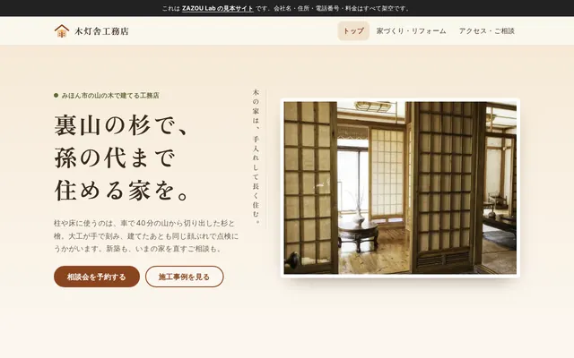
工務店施工事例と家づくりの流れ、相談会の予約まで。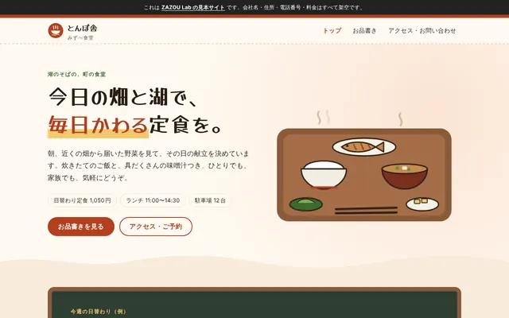
食堂・飲食店日替わり・お品書き・営業時間・駐車場をひと目で。
どのサイトにも入れること
- スマホとパソコンの両方で崩れない作り。押す所は指で押しやすい大きさ。
- 料金の目安・流れ・よくある質問・営業時間・駐車場など、お客さんが知りたいことを先に。
- 文字と背景の明るさの差、見出しの順番など、読みやすさの基本。
- 写真がなくても見せられる、自作の絵（SVG）。軽く、速く表示されます。
ご依頼の流れ
- ご相談業種と、ホームページで困っていることをお聞きします。
- お見積りページ数と内容から作業時間の目安を出し、下の料金でお見積りします。
- 方向を決める見本を見ながら、色・書体・構成の方向を決めます。
- 制作・ご確認つくったページをスマホとパソコンで確かめていただき、直します。
- 公開ご確認のうえで公開します。
料金（税込）
| 段階 | 作業時間の目安 | 料金 |
|---|---|---|
| 1段目 | 約17時間まで | 50,000円 |
| 2段目 | 約50時間 | 150,000円 |
| 3段目 | 約93時間 | 280,000円 |
| 保守 | 月3時間まで | 月10,000円 |
| 時間単価 | 上記以外・追加の作業 | 3,000円／時間 |
ZAZOU Lab の共通の料金です。どの段階になるかは、ご相談の内容から事前にお見積りします。目安の時間を超える分は、事前にお見積りのうえ時間単価で承ります。
ZAZOU株式会社 ／ matsumura.takashi@zazoucorp.com
Samples見本20業種
- 町工場・金属加工ミツカド精板図面1枚・1個から見積。設備一覧と対応材質を前面に出した、BtoB向けの町工場。鉄紺×安全オレンジ／BIZ UDゴシック／図面風のヒーロー
- 工務店木灯舎工務店地元の杉で建てる工務店。施工事例と家づくりの流れ、相談会の予約まで。生成り×杉茶／明朝の見出し／家の絵の事例カード
- 食堂・定食屋みずべ食堂 とんぼ舎湖のそばの定食屋。黒板風の日替わりと手描きの料理イラストで、食欲をそそる。クリーム×トマト色／手書き風の見出し／黒板の献立
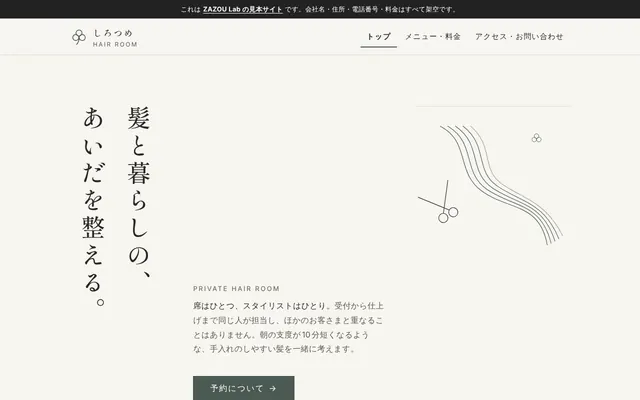
美容室ヘアルーム しろつめ一席だけの美容室。明朝の縦書きと広い余白で、静かに上品に見せる。生成り×セージ／明朝の縦書き／細い線画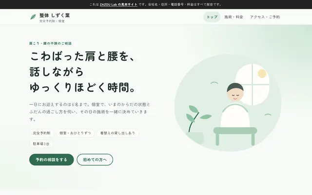
整体院整体 しずく葉肩や腰の重さを話しながらほどく、完全予約制の整体院。効果の断定をしない書き方。淡い緑／丸ゴシック／縦のタイムライン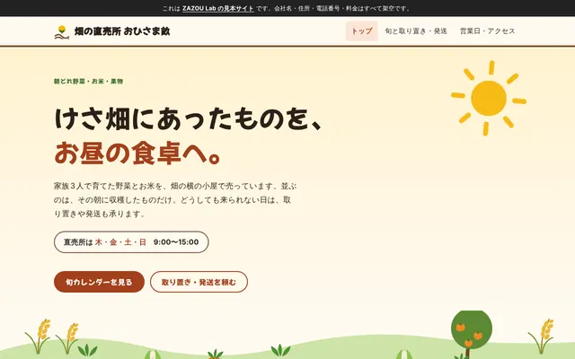
農家の直売所畑の直売所 おひさま畝朝どれ野菜とお米の直売所。旬カレンダーと取り置き・発送の案内。赤土色×ひまわり色／ポップな見出し／野菜の絵と旬の表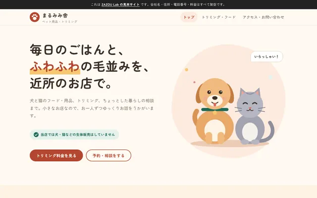
ペット用品・トリミングまるみみ舎フード・用品とトリミングの小さなお店。犬の大きさ別の料金表と来店の流れ。クリーム×テラコッタ／丸いカード／犬と猫の絵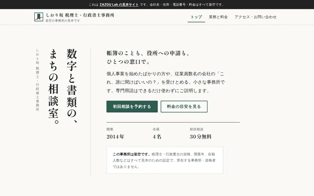
士業事務所しおり坂 税理士・行政書士事務所税務と許認可を一つの窓口で。料金の目安と相談の流れを落ち着いて伝える。生成り×深緑／明朝の縦書き／細い罫線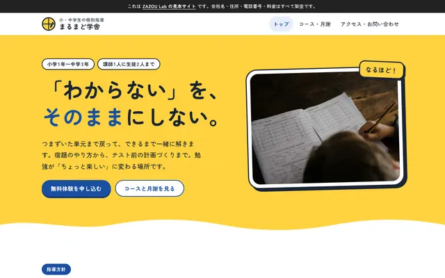
学習塾個別指導 まるまど学舎わからない所まで戻って教える小中学生の個別指導。月謝と時間割がひと目でわかる。黄色×青／太い丸ゴシック／色分けの時間割 一棟貸しの宿汀ノ灯湖と山のあいだの古民家を一日一組で。人数別の料金と滞在の決まりを静かに伝える。墨色×生成り／明朝／山と湖の風景
一棟貸しの宿汀ノ灯湖と山のあいだの古民家を一日一組で。人数別の料金と滞在の決まりを静かに伝える。墨色×生成り／明朝／山と湖の風景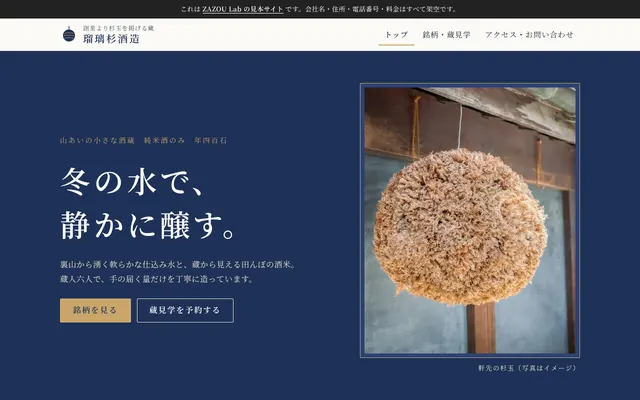
酒蔵瑠璃杉酒造山あいの小さな酒蔵。銘柄の味の図、蔵見学の予約、直売・通販を格調ある藍色で。藍×白／明朝／精米歩合と味の図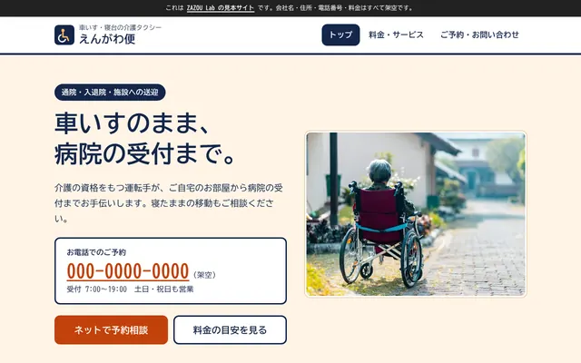
介護タクシー介護タクシー えんがわ便車いす・寝台の介護タクシー。大きな文字と料金の目安で、電話予約しやすい構成。紺×オレンジ／本文18px・UDゴシック／大きなボタン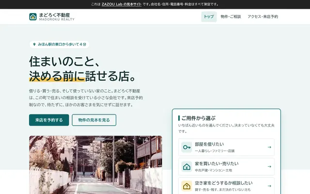
不動産会社まどろく不動産間取り図つきの物件カードと来店予約の流れ、空き家相談をまとめた町の不動産店。白×青緑／UDゴシック／用件から選ぶパネル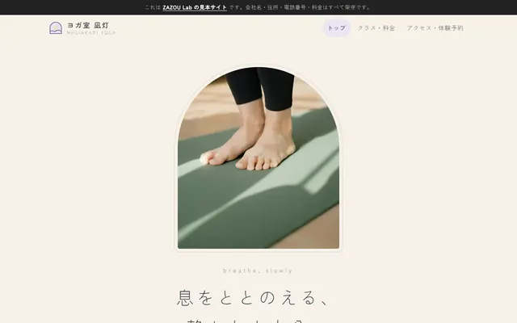
ヨガ教室ヨガ室 凪灯週間スケジュールと回数券・月謝、初めての方への案内がそろう少人数のヨガ教室。ベージュ×ラベンダー／細字のゴシック／アーチ形の朝日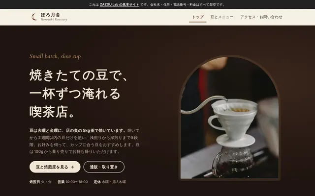
自家焙煎の喫茶店焙煎と喫茶 ほろ月舎週2回焙煎する小さな喫茶店。焙煎度つきの豆の表と、通販・取り置きの流れ。焦げ茶×真鍮色／欧文セリフと明朝／焙煎度のものさし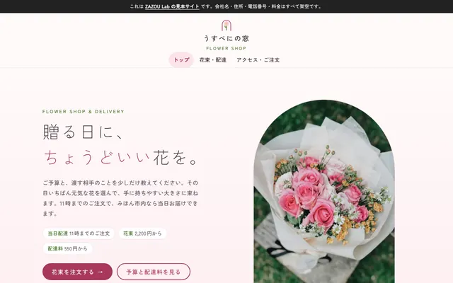
花屋花屋 うすべにの窓予算別の花束の目安と当日配達。季節の花を、やわらかな色で伝える町の花屋。桜色×若草／細字のゴシック／アーチ窓のくり返し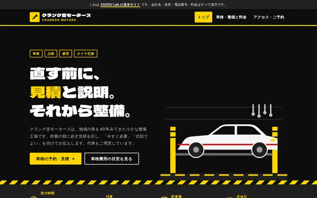
自動車整備工場クランク堂モータース車検費用の目安と見積書の見本で「先に説明する」整備工場を伝える、力強いサイト。黒×警告イエロー／極太ゴシック／警告ストライプ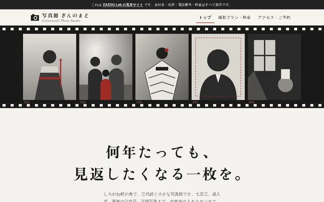
写真館写真館 ぎんのまどフィルムの帯と額装プリント風のカードで見せる、モノクロに赤を差した写真館。モノクロ×セーフライトの赤／アンティーク明朝／フィルムの帯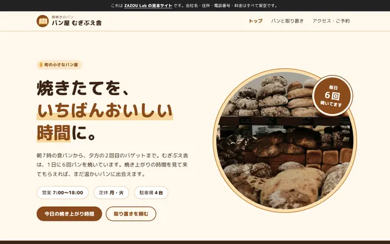
パン屋パン屋 むぎぶえ舎1日6回の焼き上がり時間表と、値段・アレルギー表示つきの商品カードで取り置きへ。クリーム×焦げ茶／丸ゴシックの太字／焼き上がりのタイムライン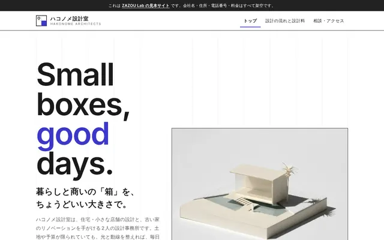
設計事務所ハコノメ設計室図面風の作品カードと、設計の流れ・設計料の目安で相談へ導く設計事務所。白×群青一色／欧文サンセリフ／グリッドを見せる構成
Pointsどのサイトにも入れていること
- スマホ（幅390px）とPCの両方で崩れない作り。押す所は指で押しやすい大きさ（44px以上）。
- 文字と背景の明るさの差（コントラスト4.5:1以上）、見出しの順番、キーボードでの操作など、読みやすさの基本。
- 写真がなくても見せられるよう、絵はすべて自作のSVG。1ページあたり軽く、速く表示されます。
- 料金の目安・流れ・よくある質問・営業時間・駐車場など、お客さんが電話する前に知りたいことを先に。
- 問い合わせフォームは見本のため送信できません（実際のサイトではお店にメールが届く形にします）。